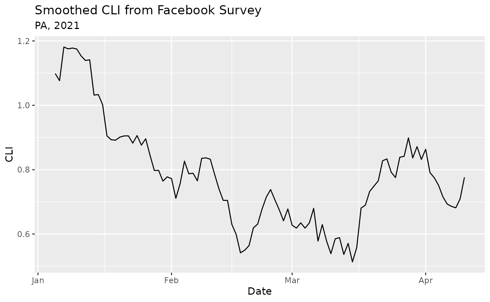

The epidatr package provides access to all the endpoints of the Delphi Epidata API, and can be used to make requests for specific signals on specific dates and in selected geographic regions.
We recommend you register for an API key. While most endpoints are available without one, there are limits on API usage for anonymous users, including a rate limit. If you regularly request large amounts of data, please consider registering for an API key. You can then specify this key by either
DELPHI_EPIDATA_KEY,
such as by editing your .Renviron filedelphi.epidata.key using
options()
Fetching some data from the Delphi Epidata API is simple. Suppose we
are interested in the covidcast
endpoint, which provides access to a range of data on COVID-19.
Reviewing the endpoint documentation, we see that we need to specify a
data source name, a signal name, a geographic level, a time resolution,
and the location and times of interest.
In this case, the covidcast() function lets us specify
these parameters for the endpoint and returns a tibble with the
results:
epidata <- covidcast(
"fb-survey", "smoothed_cli", "state", "day", "pa",
epirange(20210105, 20210410)
)
epidata
#> # A tibble: 96 × 15
#> geo_value signal source geo_type time_type time_value direction issue
#> <chr> <chr> <chr> <fct> <fct> <date> <dbl> <date>
#> 1 pa smoothed_… fb-su… state day 2021-01-05 NA 2021-01-10
#> 2 pa smoothed_… fb-su… state day 2021-01-06 NA 2021-01-29
#> 3 pa smoothed_… fb-su… state day 2021-01-07 NA 2021-01-29
#> 4 pa smoothed_… fb-su… state day 2021-01-08 NA 2021-01-29
#> # ℹ 92 more rows
#> # ℹ 7 more variables: lag <int>, missing_value <int>, missing_stderr <int>,
#> # missing_sample_size <int>, value <dbl>, stderr <dbl>, sample_size <dbl>We can then easily plot the data using ggplot2:
library(ggplot2)
ggplot(epidata, aes(x = time_value, y = value)) +
geom_line() +
labs(
title = "Smoothed CLI from Facebook Survey",
subtitle = "PA, 2021",
x = "Date",
y = "CLI"
)
The Delphi
Epidata API documentation has more information on the available
endpoints and arguments. You can also use the
avail_endpoints() function to get a table of endpoint
functions:
avail_endpoints()
#> # A tibble: 28 × 2
#> Endpoint Description
#> <chr> <chr>
#> 1 covid_hosp_facility() COVID hospitalization data for specific facilit…
#> 2 covid_hosp_facility_lookup() COVID hospitalization facility identifiers
#> 3 covid_hosp_state_timeseries() COVID Hospitalization Data by State
#> 4 covidcast() COVID data via the covidcast endpoint
#> # ℹ 24 more rowsExample queries with all the endpoint functions available in this package are given below.
The COVIDcast
endpoint of the Epidata API contains many separate data sources and
signals. It can be difficult to find the name of the signal you’re
looking for, so you can use covidcast_epidata to get help
with finding sources and functions without leaving R.
The covidcast_epidata() function fetches a list of all
signals, and returns an object containing fields for every signal:
epidata <- covidcast_epidata()
epidata$signals
#> $`chng:smoothed_outpatient_cli`
#> [1] "COVID-Related Doctor Visits"
#> [1] "chng:smoothed_outpatient_cli"
#> [1] "Estimated percentage of outpatient doctor visits primarily about COVID-related symptoms"
#>
#> $`chng:smoothed_adj_outpatient_cli`
#> [1] "COVID-Related Doctor Visits (Day-adjusted)"
#> [1] "chng:smoothed_adj_outpatient_cli"
#> [1] "Estimated percentage of outpatient doctor visits primarily about COVID-related symptoms"
#>
#> $`chng:smoothed_outpatient_covid`
#> [1] "COVID-Confirmed Doctor Visits"
#> [1] "chng:smoothed_outpatient_covid"
#> [1] "COVID-Confirmed Doctor Visits"
#>
#> $`chng:smoothed_adj_outpatient_covid`
#> [1] "COVID-Confirmed Doctor Visits (Day-adjusted)"
#> [1] "chng:smoothed_adj_outpatient_covid"
#> [1] "COVID-Confirmed Doctor Visits"
#>
#> [ reached getOption("max.print") -- omitted 439 entries ]
#> attr(,"class")
#> [1] "covidcast_data_signal_list" "list"If you use an editor that supports tab completion, such as RStudio,
type epidata$signals$ and wait for the tab completion
popup. You will be able to type the name of signals and have the
autocomplete feature select them from the list for you. Note that some
signal names have dashes in them, so to access them we rely on the
backtick operator:
epidata$signals$`fb-survey:smoothed_cli`
#> [1] "COVID-Like Symptoms (Unweighted 7-day average)"
#> [1] "fb-survey:smoothed_cli"
#> [1] "Estimated percentage of people with COVID-like illness "These objects can be used directly to fetch data, without requiring
us to use the covidcast() function. Simply use the
$call attribute of the object:
epidata$signals$`fb-survey:smoothed_cli`$call("state", "pa", epirange(20210405, 20210410))
#> # A tibble: 6 × 15
#> geo_value signal source geo_type time_type time_value direction issue
#> <chr> <chr> <chr> <fct> <fct> <date> <dbl> <date>
#> 1 pa smoothed_… fb-su… state day 2021-04-05 NA 2021-04-10
#> 2 pa smoothed_… fb-su… state day 2021-04-06 NA 2021-04-11
#> 3 pa smoothed_… fb-su… state day 2021-04-07 NA 2021-04-12
#> 4 pa smoothed_… fb-su… state day 2021-04-08 NA 2021-04-13
#> # ℹ 2 more rows
#> # ℹ 7 more variables: lag <int>, missing_value <int>, missing_stderr <int>,
#> # missing_sample_size <int>, value <dbl>, stderr <dbl>, sample_size <dbl>We can obtain the epidata_call object underlying a
request by setting the dry_run argument to
TRUE in fetch_args_list:
covidcast(
"fb-survey", "smoothed_cli", "state", "day", "pa",
epirange(20210405, 20210410),
fetch_args = fetch_args_list(dry_run = TRUE)
)
#>
#> ── <epidata_call> object: ──────────────────────────────────────────────────────
#> • Pipe this object into `fetch()` to actually fetch the data
#> • Request URL:
#> https://api.delphi.cmu.edu/epidata/covidcast/?data_source=fb-survey&signals=smoothed_cli&geo_type=state&time_type=day&geo_values=pa&time_values=20210405-20210410(Some endpoints allow for the use of * to access data at
all locations. Check the help for a given endpoint to see if it supports
*.)
API docs: https://cmu-delphi.github.io/delphi-epidata/api/covidcast_signals.html
County geo_values are FIPS codes and are discussed in the API docs here. The example below is for Orange County, California.
covidcast(
source = "fb-survey",
signals = "smoothed_accept_covid_vaccine",
geo_type = "county",
time_type = "day",
time_values = epirange(20201221, 20201225),
geo_values = "06059"
)
#> # A tibble: 5 × 15
#> geo_value signal source geo_type time_type time_value direction issue
#> <chr> <chr> <chr> <fct> <fct> <date> <dbl> <date>
#> 1 06059 smoothed_… fb-su… county day 2020-12-21 NA 2020-12-22
#> 2 06059 smoothed_… fb-su… county day 2020-12-22 NA 2020-12-23
#> 3 06059 smoothed_… fb-su… county day 2020-12-23 NA 2020-12-24
#> 4 06059 smoothed_… fb-su… county day 2020-12-24 NA 2020-12-25
#> # ℹ 1 more row
#> # ℹ 7 more variables: lag <int>, missing_value <int>, missing_stderr <int>,
#> # missing_sample_size <int>, value <dbl>, stderr <dbl>, sample_size <dbl>The covidcast endpoint supports * in its
time and geo fields:
covidcast(
source = "fb-survey",
signals = "smoothed_accept_covid_vaccine",
geo_type = "county",
time_type = "day",
time_values = epirange(20201221, 20201225),
geo_values = "*"
)
#> # A tibble: 2,025 × 15
#> geo_value signal source geo_type time_type time_value direction issue
#> <chr> <chr> <chr> <fct> <fct> <date> <dbl> <date>
#> 1 01000 smoothed_… fb-su… county day 2020-12-21 NA 2020-12-22
#> 2 01073 smoothed_… fb-su… county day 2020-12-21 NA 2020-12-22
#> 3 01089 smoothed_… fb-su… county day 2020-12-21 NA 2020-12-22
#> 4 01097 smoothed_… fb-su… county day 2020-12-21 NA 2020-12-22
#> # ℹ 2,021 more rows
#> # ℹ 7 more variables: lag <int>, missing_value <int>, missing_stderr <int>,
#> # missing_sample_size <int>, value <dbl>, stderr <dbl>, sample_size <dbl>API docs: https://cmu-delphi.github.io/delphi-epidata/api/covid_hosp_facility_lookup.html
covid_hosp_facility_lookup(city = "southlake")
covid_hosp_facility_lookup(state = "WY")
# A non-example (there is no city called New York in Wyoming)
covid_hosp_facility_lookup(state = "WY", city = "New York")API docs: https://cmu-delphi.github.io/delphi-epidata/api/covid_hosp_facility.html
covid_hosp_facility(
hospital_pks = "100075",
collection_weeks = epirange(20200101, 20200501)
)API docs: https://cmu-delphi.github.io/delphi-epidata/api/covid_hosp.html
covid_hosp_state_timeseries(states = "MA", dates = "20200510")API docs: https://cmu-delphi.github.io/delphi-epidata/api/delphi.html
API docs: https://cmu-delphi.github.io/delphi-epidata/api/flusurv.html
flusurv(locations = "ca", epiweeks = 202001)API docs: https://cmu-delphi.github.io/delphi-epidata/api/fluview.html
API docs: https://cmu-delphi.github.io/delphi-epidata/api/fluview_clinical.html
fluview_clinical(regions = "nat", epiweeks = epirange(201601, 201701))API docs: https://cmu-delphi.github.io/delphi-epidata/api/fluview_meta.html
API docs: https://cmu-delphi.github.io/delphi-epidata/api/gft.html
API docs: https://cmu-delphi.github.io/delphi-epidata/api/ecdc_ili.html
ecdc_ili(regions = "Armenia", epiweeks = 201840)API docs: https://cmu-delphi.github.io/delphi-epidata/api/kcdc_ili.html
kcdc_ili(regions = "ROK", epiweeks = 200436)API docs: https://cmu-delphi.github.io/delphi-epidata/api/nidss_flu.html
API docs: https://cmu-delphi.github.io/delphi-epidata/api/nowcast.html
API docs: https://cmu-delphi.github.io/delphi-epidata/api/dengue_nowcast.html
dengue_nowcast(locations = "pr", epiweeks = epirange(201401, 202301))API docs: https://cmu-delphi.github.io/delphi-epidata/api/nidss_dengue.html
nidss_dengue(locations = "taipei", epiweeks = epirange(200301, 201301))API docs: https://cmu-delphi.github.io/delphi-epidata/api/paho_dengue.html
paho_dengue(regions = "ca", epiweeks = epirange(200201, 202319))API docs: https://cmu-delphi.github.io/delphi-epidata/api/wiki.html
These require private access keys to use (separate from the Delphi
Epidata API key). To actually run these locally, you will need to store
these secrets in your .Reviron file, or set them as
environmental variables.
API docs: https://cmu-delphi.github.io/delphi-epidata/api/cdc.html
pvt_cdc(auth = Sys.getenv("SECRET_API_AUTH_CDC"), epiweeks = epirange(202003, 202304), locations = "ma")API docs: https://cmu-delphi.github.io/delphi-epidata/api/dengue_sensors.html
pvt_dengue_sensors(
auth = Sys.getenv("SECRET_API_AUTH_SENSORS"),
names = "ght",
locations = "ag",
epiweeks = epirange(201404, 202004)
)API docs: https://cmu-delphi.github.io/delphi-epidata/api/ght.html
pvt_ght(
auth = Sys.getenv("SECRET_API_AUTH_GHT"),
epiweeks = epirange(199301, 202304),
locations = "ma",
query = "how to get over the flu"
)API docs: https://cmu-delphi.github.io/delphi-epidata/api/meta_norostat.html
pvt_meta_norostat(auth = Sys.getenv("SECRET_API_AUTH_NOROSTAT"))API docs: https://cmu-delphi.github.io/delphi-epidata/api/norostat.html
pvt_norostat(auth = Sys.getenv("SECRET_API_AUTH_NOROSTAT"), locations = "1", epiweeks = 201233)API docs: https://cmu-delphi.github.io/delphi-epidata/api/quidel.html
pvt_quidel(auth = Sys.getenv("SECRET_API_AUTH_QUIDEL"), locations = "hhs1", epiweeks = epirange(200301, 202105))API docs: https://cmu-delphi.github.io/delphi-epidata/api/sensors.html
pvt_sensors(
auth = Sys.getenv("SECRET_API_AUTH_SENSORS"),
names = "sar3",
locations = "nat",
epiweeks = epirange(200301, 202105)
)API docs: https://cmu-delphi.github.io/delphi-epidata/api/twitter.html
pvt_twitter(
auth = Sys.getenv("SECRET_API_AUTH_TWITTER"),
locations = "nat",
epiweeks = epirange(200301, 202105)
)